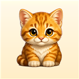

Open-Source Licenses
Last updated: July 22, 2026
Cat Evolution bundles the following third-party font files. Copyright holder names below are quoted verbatim from the "name" table embedded inside each font file (Copyright and License URL records), not reconstructed from memory. This page does not cover the game's animal artwork, background art, UI icons, or audio.
Files: Comfortaa-Regular.ttf, Comfortaa-Bold.ttf
Copyright (from font metadata): Copyright 2011 The Comfortaa Project Authors (github.com/alexeiva/comfortaa), with Reserved Font Name "Comfortaa".
License: SIL Open Font License, Version 1.1 (26 February 2007) — openfontlicense.org (the exact URL embedded in the font's own metadata is scripts.sil.org/OFL).
Files: NotoSansKR-Regular.ttf, NotoSansKR-Bold.ttf
Copyright (from font metadata): (c) 2014-2021 Adobe (adobe.com), with Reserved Font Name 'Source'. Noto Sans CJK / Source Han Sans is a joint Google/Adobe project; the copyright and Reserved Font Name embedded in this specific file are Adobe's, as shown above.
License: SIL Open Font License, Version 1.1 (26 February 2007) — openfontlicense.org (the exact URL embedded in the font's own metadata is scripts.sil.org/OFL).
Files: NotoSansJP-Regular.ttf, NotoSansJP-Bold.ttf
Copyright (from font metadata): (c) 2014-2021 Adobe (adobe.com), with Reserved Font Name 'Source'. Noto Sans CJK / Source Han Sans is a joint Google/Adobe project; the copyright and Reserved Font Name embedded in this specific file are Adobe's, as shown above.
License: SIL Open Font License, Version 1.1 (26 February 2007) — openfontlicense.org (the exact URL embedded in the font's own metadata is scripts.sil.org/OFL).
Files: NotoSansThai-Regular.ttf, NotoSansThai-Bold.ttf
Copyright (from font metadata): Copyright 2022 The Noto Project Authors (github.com/notofonts/thai).
License: SIL Open Font License, Version 1.1 (26 February 2007) — openfontlicense.org (the exact URL embedded in the font's own metadata is scripts.sil.org/OFL).
Files: NotoSansArabic-Regular.ttf, NotoSansArabic-Bold.ttf
Copyright (from font metadata): Copyright 2022 The Noto Project Authors (github.com/notofonts/arabic).
License: SIL Open Font License, Version 1.1 (26 February 2007) — openfontlicense.org (the exact URL embedded in the font's own metadata is openfontlicense.org).
Summary only — not a substitute for the full license text linked above, which governs: